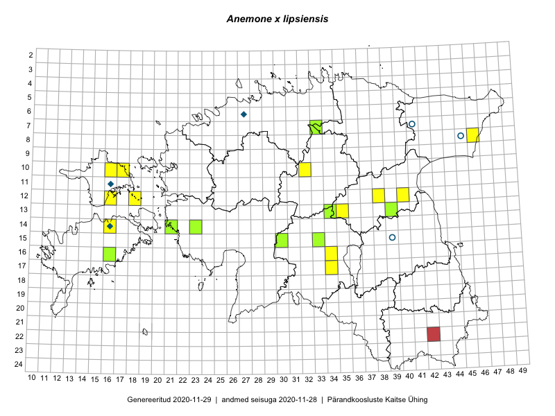

Anemone x lipsiensis
Uuendatud: 2016-12-08
Kaardile koondatud taksonid: Anemone x lipsiensis Beck

Kaart põhineb 21 kirjel, neist vaatlusi 20 ja eksemplare 1. Taksonit on leitud 12 ruudust.
| Ruut | Vaatleja(d) | Vaatlusaeg | Kirje tüüp | Viide andmebaasikirjele |
|---|---|---|---|---|
| 14-16 | Ott Luuk, Elle Roosaluste, Jaak-Albert Metsoja | 2015-06-15 | ruut/ala | vaata PlutoFis |
| 07-33 | Jana-Maria Habicht, Ester Valdvee | 2015-05-01 | ruut/ala | vaata PlutoFis |
| 13-39 | Eeva-Maria Jeletsky, Tarmo Niitla | 2015-05-03 | ruut/ala | vaata PlutoFis |
| 15-33 | Maria Abakumova | 2015-05-11 | ruut/ala | vaata PlutoFis |
| 15-30 | Indrek Tammekänd | 2015-05-06 | punkt | vaata PlutoFis |
| 14-16 | Mari Reitalu, Sirje Azarov | 2015-05-09 | ruut/ala | vaata PlutoFis |
| 14-16 | Mari Reitalu, Sirje Azarov | 2015-05-09 | punkt | vaata PlutoFis |
| 16-34 | Aat Sarv | 2015-05-08 | ruut/ala | vaata PlutoFis |
| 15-30 | Toomas Kukk, Eerik Leibak | 2016-04-28 | ruut/ala | vaata PlutoFis |
| 14-23 | Toomas Kukk, Indrek Tammekänd | 2016-04-29 | ruut/ala | vaata PlutoFis |
| 15-30 | Toomas Kukk, Eerik Leibak | 2016-04-28 | punkt | vaata PlutoFis |
| 15-30 | Toomas Kukk, Eerik Leibak | 2016-04-28 | punkt | vaata PlutoFis |
| 15-30 | Toomas Kukk, Eerik Leibak | 2016-04-28 | punkt | vaata PlutoFis |
| 10-32 | Ott Luuk | 2016-05-06 | punkt | vaata PlutoFis |
| 16-16 | Meeli Mesipuu | 2016-05-06 | punkt | vaata PlutoFis |
| 08-46 | Eerik Leibak | 2016-05-12 | ruut/ala | vaata PlutoFis |
| 08-46 | Eerik Leibak | 2016-05-12 | punkt | vaata PlutoFis |
| 08-46 | Eerik Leibak | 2016-05-12 | punkt | vaata PlutoFis |
| 13-35 | Ulvi Selgis | 2016-05-06 | punkt | vaata PlutoFis |
| 14-21 | Toomas Kukk | 2013-06-29 | ruut/ala | vaata PlutoFis |
| 07-33 | Jana-Maria Habicht | 2015-05-01 | eksemplar | vaata PlutoFis |